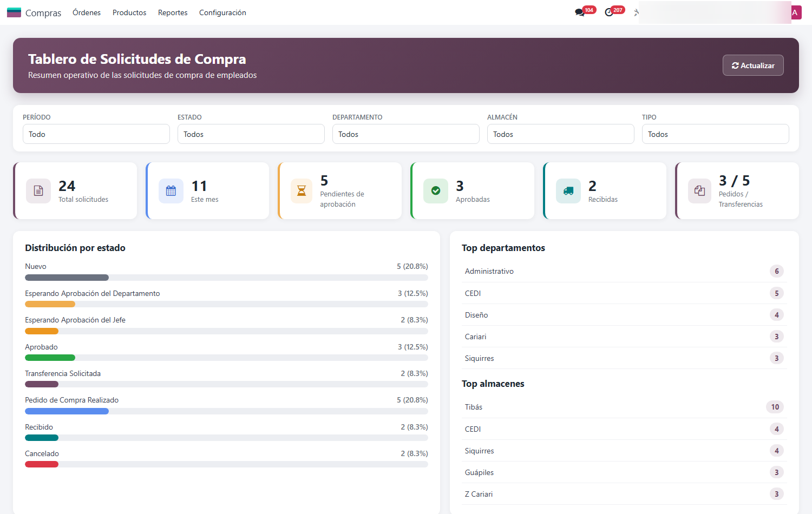
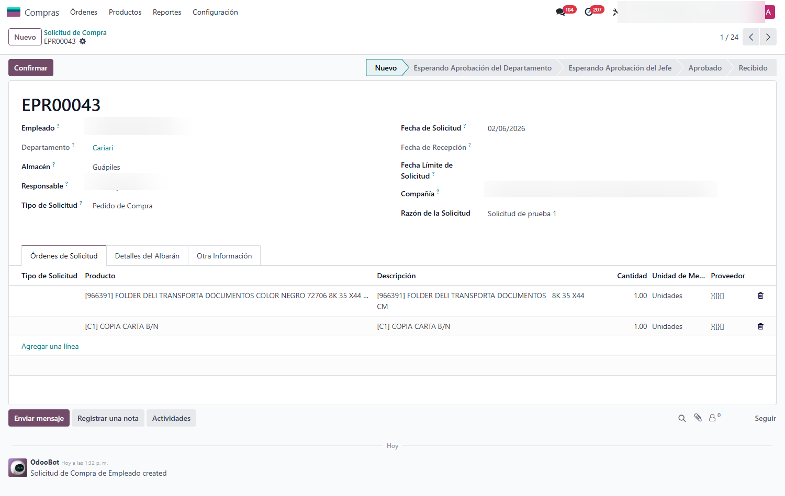
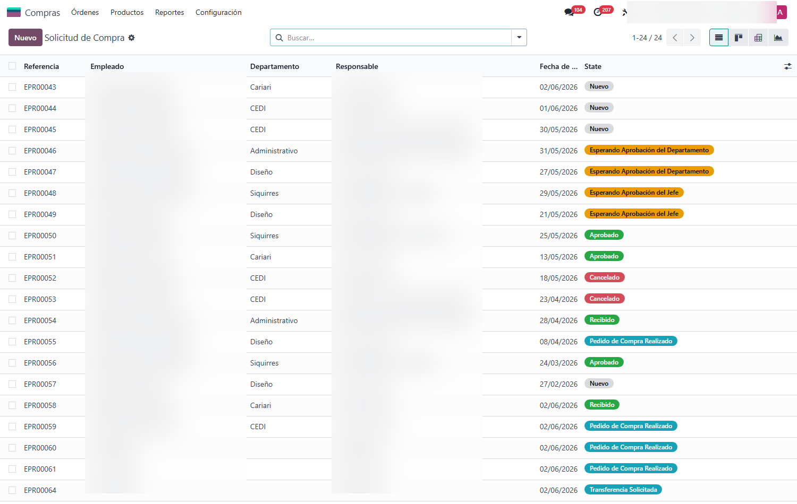
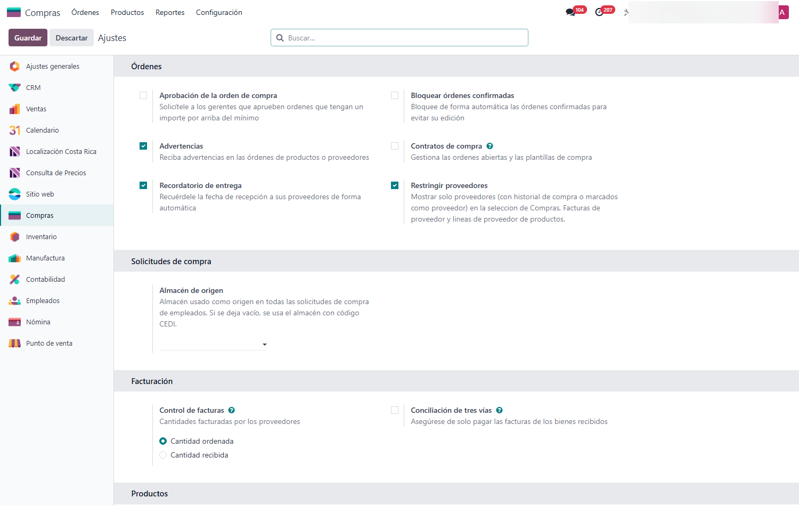

Solicitud de Compra de Empleado
Permite que cualquier empleado solicite material desde Odoo 18 y lo lleva por un flujo de aprobación de varios niveles —jefe de departamento y gerente— hasta convertirlo en orden de compra o transferencia interna. Incluye un tablero operativo en tiempo real del estado de todas las solicitudes.
Capturas del proyecto
01 / 05




Pedir material por correo y WhatsApp, sin control ni trazabilidad
En muchas empresas el empleado pide material por correo, chat o de palabra. Nadie sabe quién aprobó qué, en qué estado va el pedido, ni cuánto se está gastando por departamento. Las compras se duplican y los reclamos no tienen respaldo.
Este módulo formaliza el proceso dentro de Odoo: el empleado crea su solicitud, el jefe de departamento y el gerente la aprueban por niveles, y al aprobarse se genera la orden de compra o la transferencia interna según el caso. Un tablero en tiempo real muestra el avance por estado, departamento y almacén, y cada requisición tiene su reporte en PDF.
Funcionalidades clave
-
Solicitud por empleado
Cualquier empleado pide el material que necesita desde su propia solicitud.
-
Aprobación multinivel
Pasa por el jefe de departamento y el gerente de requerimientos antes de comprarse.
-
Compra o transferencia
Al aprobarse genera la orden de compra o la transferencia interna de stock.
-
Tablero en tiempo real
Totales, pendientes de aprobación y distribución por estado, departamento y almacén.
-
Proveedor por línea
El jefe de departamento elige el proveedor de cada material solicitado.
-
Reporte por requisición
Genera un PDF con el detalle de cada requerimiento de material.
Tecnología detrás del producto
¿Tu equipo pide material por chat y nadie controla el gasto?
Adapto el flujo de aprobación a tu organigrama e integro las compras con tu inventario.